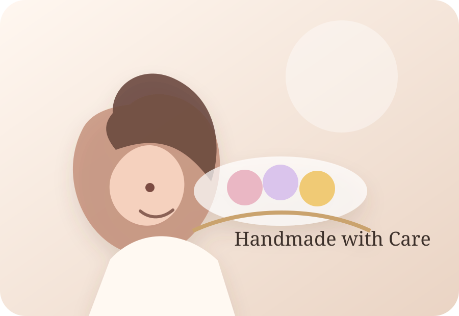

Birthday Gift
Use birth date, birthstone color and a matching crystal palette to create a piece that feels personally chosen.
Choose a personal bracelet direction or a gemstone piece for birthdays, friendship, holidays and self-gifting. Quotes are confirmed after product details are reviewed.
Request Gift Quote
Use birth date, birthstone color and a matching crystal palette to create a piece that feels personally chosen.
Two bracelets with matching stones or complementary colors, packaged with a small message card when available.
Rose quartz, moonstone, amethyst and soft neutral palettes for a gentle everyday piece.
For this first-stage independent site, orders are handled by quote instead of automatic checkout.
Send style, quantity, country and timeline.
We confirm design, final quote and shipping.
PayPal invoice or payment link after confirmation.
Tracking is shared after shipment.